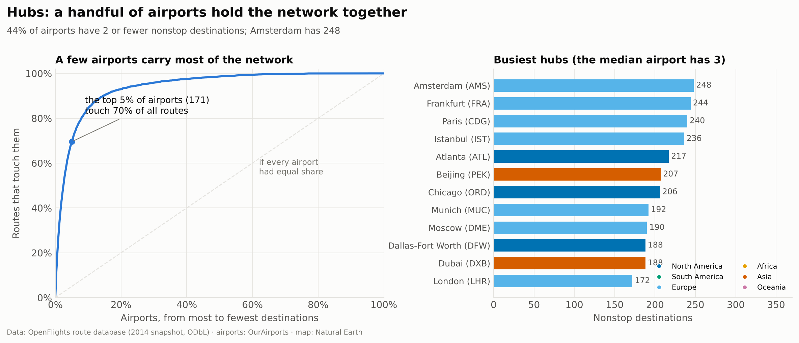
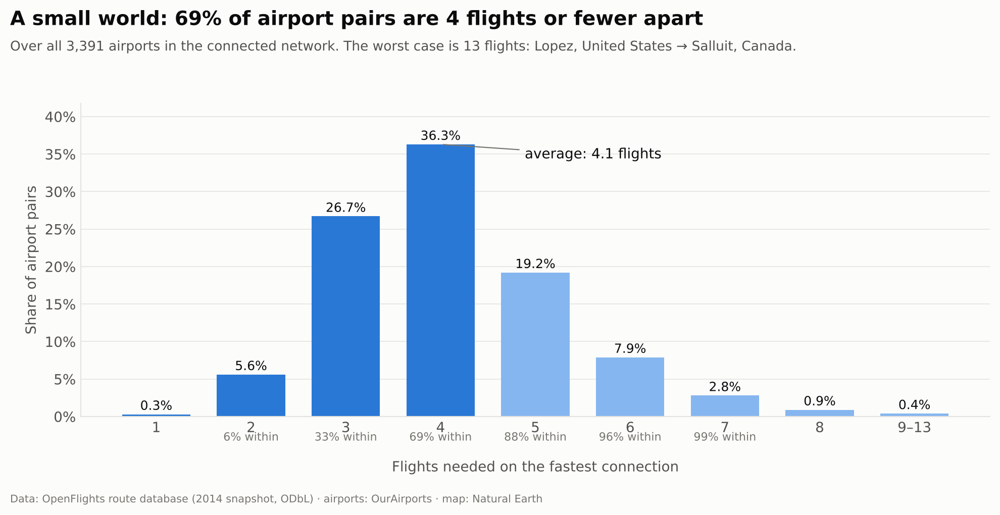
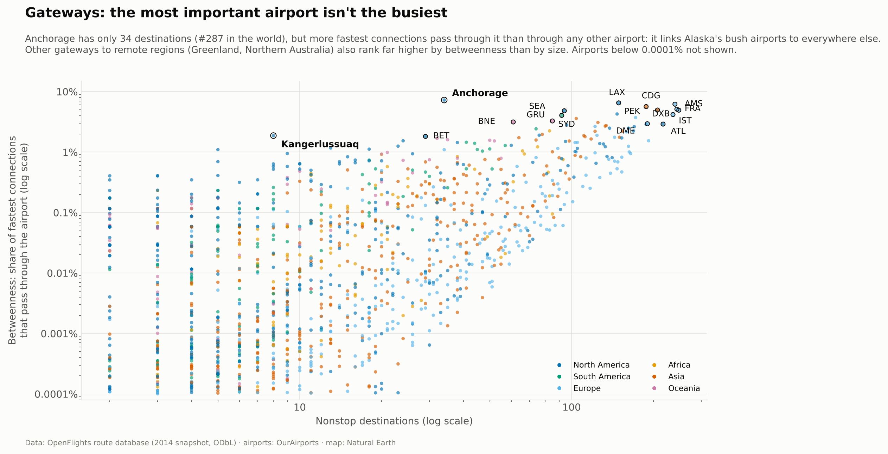
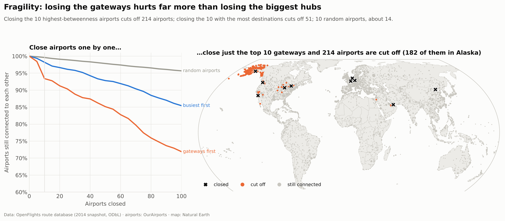
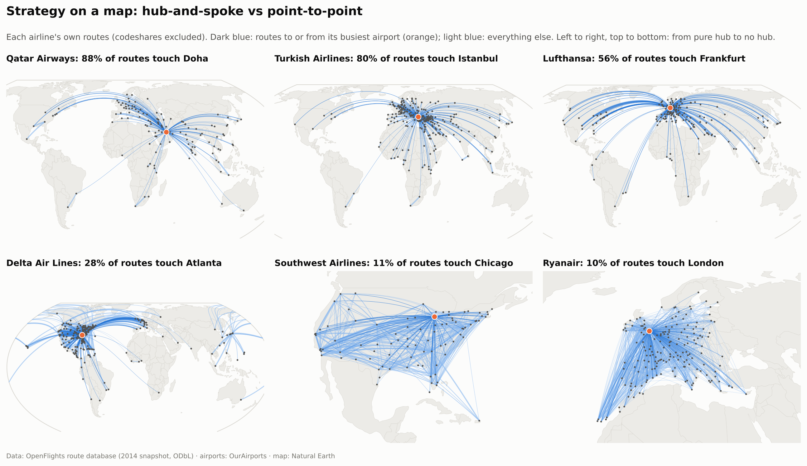
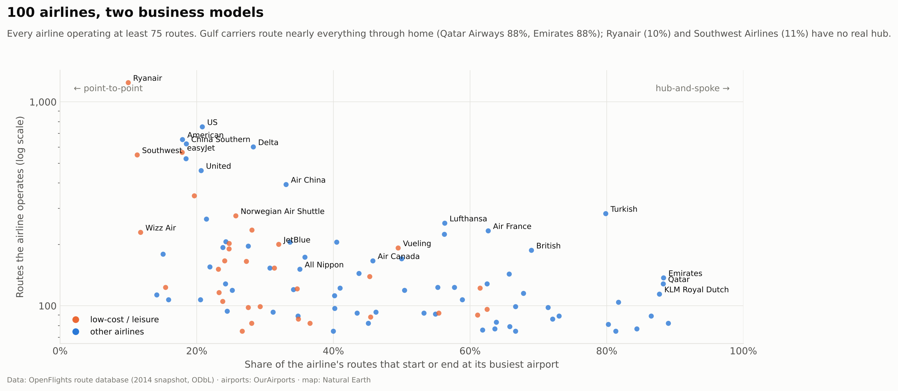
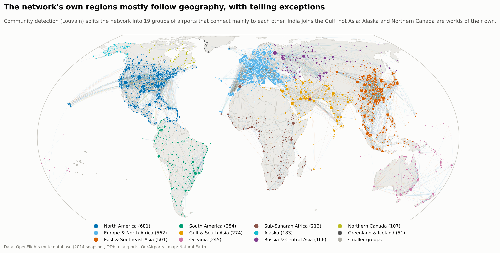

A network analysis of the world's air routes
Four flights from almost anywhere
3,419 airports, 19,239 nonstop routes, 501 airlines. Which airports hold the world's air network together, how few flights separate any two places, and what breaks when the wrong airports close.
Routes sold by 3+ airlines. Drag to spin the globe.
1 · Hubs
A handful of airports carry the network
Most airports are small: the median one has nonstop flights to just 3 destinations, and 44% have two or fewer. A few are enormous. Amsterdam reaches 248 airports nonstop, Frankfurt 244, Paris 240.
The top 5% of airports (171 of them) are an endpoint of 70% of all routes. This is what network scientists call a heavy-tailed network: no "typical" airport, just many spokes and a few hubs.

2 · Small world
69% of airport pairs are four flights or fewer apart
Hubs make the world small. Over every pair of the 3,391 connected airports, the fastest connection takes 4.1 flights on average; 33% of pairs need three or fewer and 96% need six or fewer. From Chicago O'Hare, 206 airports are one flight away, 1,527 are two, and 3,015 are within three.
Pick an airport to see how many flights everywhere else takes. Hover an airport for the itinerary.
The two airports farthest apart are Lopez Island Airport in Washington State and Salluit Airport in northern Quebec: 13 flights (LPS → WSX → DHB → RCE → FBS → LKE → SEA → YYC → YUL → YGL → YPX → AKV → YIK → YZG), because both sit at the end of chains of tiny regional airports and the only big airports on the way are Seattle, Calgary and Montreal.

3 · Gateways
The most important airport isn't the busiest
Counting destinations is one way to rank airports. Betweenness is another: the share of all fastest connections in the network that pass through an airport. It measures how much an airport holds the network together.
By betweenness, the world's #1 airport is Anchorage, with just 34 destinations (#287 by size). Its score is 1.5× Amsterdam's, even though Amsterdam has seven times the destinations. Anchorage is the only link between Alaska's bush airports and the rest of the world, so every trip from one of them to anywhere else goes through it. Kangerlussuaq in Greenland, with 8 destinations, ranks #38 for the same reason. 6 of the top 20 airports by betweenness aren't in the top 50 by destinations.

4 · Fragility
Losing the gateways hurts more than losing the biggest hubs
What if airports closed? Close 10 random airports and about 14 others lose their only links. Close the 10 with the most destinations and 51 are cut off. Close the 10 with the highest betweenness and 214 airports (6.3% of the network) are stranded, 182 of them in Alaska.
The big hubs are heavily backed up: Frankfurt's passengers can reroute via Munich or Amsterdam. Gateways have no backup. After 100 closures in betweenness order, only 72% of airports are still connected, against 85% when the busiest close first and 96% at random.

5 · Airlines
Two business models, visible from space
Look at one airline at a time and two strategies appear. Hub-and-spoke carriers route almost everything through home: 88% of Qatar Airways routes start or end in Doha, 88% of Emirates routes in Dubai, 80% of Turkish Airlines routes in Istanbul. Point-to-point carriers criss-cross between many bases: only 10% of the 1,242 Ryanair routes touch its busiest airport, London Stansted, and 11% of Southwest Airlines routes touch Chicago Midway.
Of the 100 airlines operating at least 75 routes, 36 send more than half of their routes through one airport and 27 fewer than a quarter. US network carriers sit in between (Delta Air Lines: 28% at Atlanta) because they run several hubs.


6 · Regions
The network draws its own map
Community detection groups airports that mostly connect to each other, without being told anything about geography. It finds 19 groups, 10 of them with 100+ airports, and they mostly match continents. The exceptions are telling: India, Iran and the Arabian Peninsula form one region around the Gulf hubs; Russia and Central Asia form their own; Alaska, Northern Canada and Greenland each form a separate world, tied to everything else through one or two gateways. That is the same structure that makes those gateways so important in chapter 3.

What it adds up to
Hubs shrink the world
A few hundred hub airports put 69% of all airport pairs within four flights of each other.
Size isn't importance
Small gateways like Anchorage hold remote regions on the network. Rankings by traffic miss them; betweenness finds them.
Redundancy is uneven
Big hubs back each other up. Gateways don't, so they are where the network is fragile.
Explore the network yourself
Any airport's routes, any airline's network, and the fastest itinerary between two airports.
Data and methods
Data
- OpenFlights route database (ODbL): 67,618 airline routes, merged into 19,239 airport pairs. It is a 2014 snapshot and has no flight frequencies or seat counts, so a route counts once whether it runs hourly or weekly.
- Airport locations from OpenFlights, with continents and the airports OpenFlights lacks filled in from OurAirports (public domain). Country outlines: Natural Earth.
- OpenFlights reuses two-letter airline codes (VY is both Vueling and Formosa Airlines), so the build names each code by the home country its routes actually serve, and leaves unclear ones unnamed rather than guessing.
Network measures
- Airports are nodes; an edge joins two airports when any airline flies between them nonstop.
- Destinations = degree. Flights needed = shortest-path length, over all pairs in the connected network (99.2% of airports; the rest are isolated island networks).
- Betweenness = share of all shortest paths through an airport (NetworkX, exact).
- Fragility: remove airports in a fixed order and measure the largest connected group left; random order averaged over 20 runs.
- Regions: Louvain community detection. Hub share: share of an airline's own (non-codeshare) routes that touch its busiest airport.
Every number on this page is computed from the data by flightnet/stats.py when the site is built.